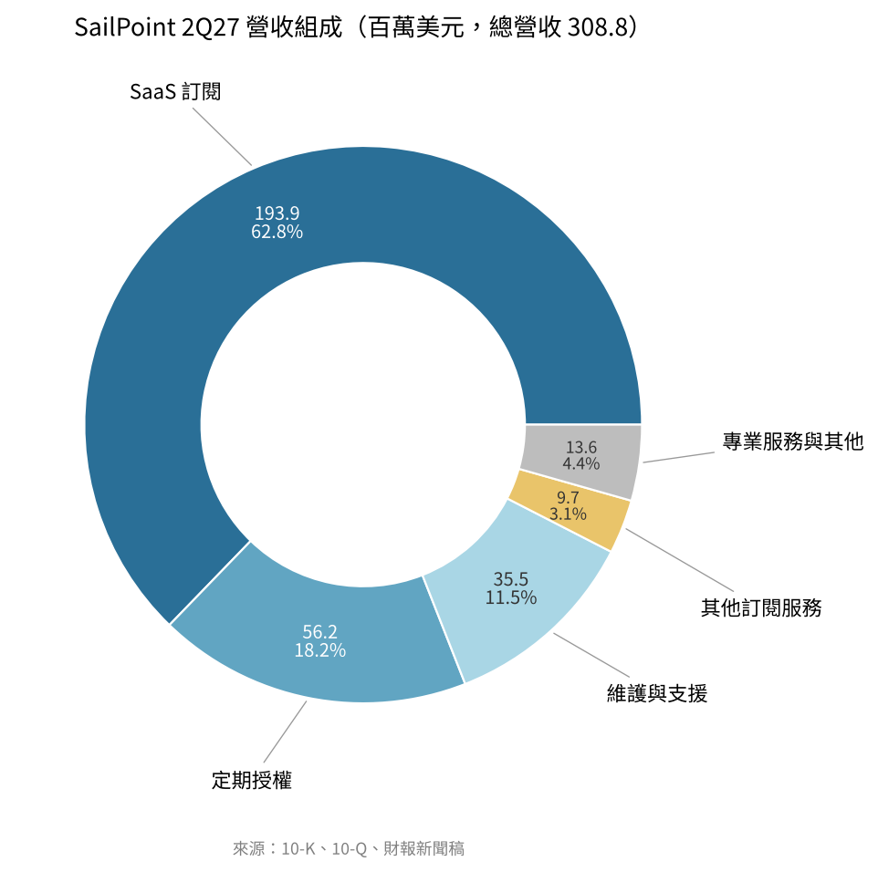
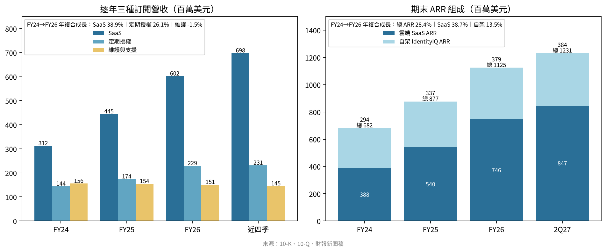
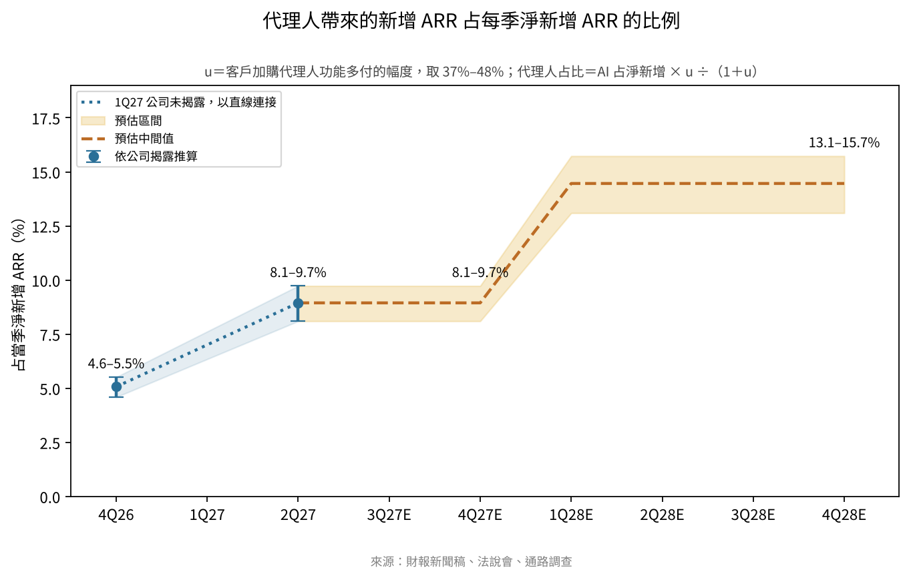
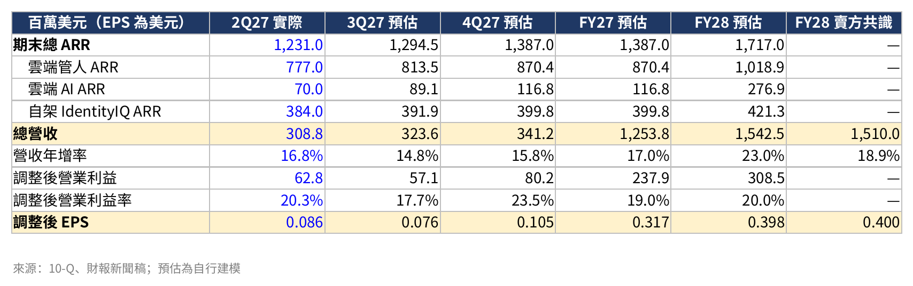
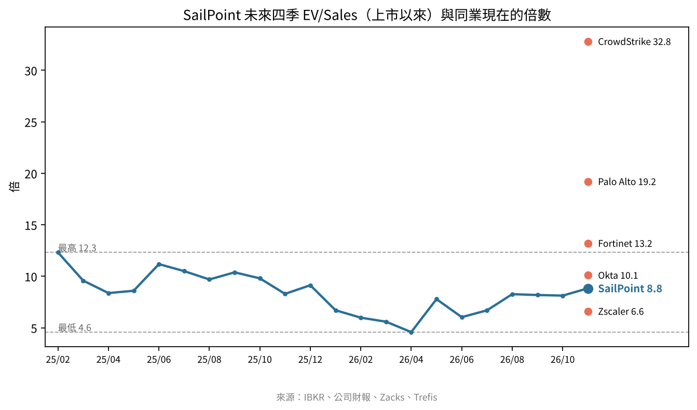

- 單位：內文金額以美元表示；圖表與表格以百萬美元表示。
- 財年：SailPoint 的 FY27 是 2026 年 2 月到 2027 年 1 月，FY28 是 2027 年 2 月到 2028 年 1 月；2Q27 是 FY27 第二季，也就是 2026 年 5 月到 7 月。
- ARR（年度經常性收入）是期末所有訂閱合約換算成一年的金額；淨新增 ARR 是期末 ARR 減去期初 ARR。
- 非人類身分是指 AI 代理人、API 金鑰、服務帳號這類不屬於真人的帳號。
SailPoint 以訂閱制賣身分治理軟體，受惠於 AI 代理人的增長
SailPoint 的軟體管理一家公司裡每個員工、每個機器帳號、每個 AI 代理人可以存取哪些系統，SailPoint 有 95.6% 的營收來自訂閱。
- 身分治理的工作包括開帳號、給權限、定期審核權限，以及在員工離職時收回權限。
- SailPoint 2Q27 的營收是 3.09 億美元，其中 SaaS 訂閱占 62.8%。
- SailPoint 2Q27 期末的 ARR 是 12.31 億美元，年增 25%；雲端 SaaS ARR 是 8.47 億美元，年增 36%。
- 雲端 SaaS ARR 占總 ARR 的比重，從 FY24 的 57% 升到 2Q27 的 69%。
- 自架客戶把系統搬到 SailPoint 的雲端之後，每個客戶的 ARR 會變成原本的 2–3 倍。


SailPoint 的雲端產品分成管理員工的 Human Fabric 與管理代理人的 Agentic Fabric
SailPoint 依照非人類身分的數量收取代理人治理的費用：Agentic 套裝為每個付費員工附送一批非人類身分額度，客戶用超過額度就要加買。
- 一般套裝（Standard、Business、Business Plus）只包含 Human Fabric，依照員工人數計價。
- Agentic 套裝同時包含 Human Fabric 與 Agentic Fabric。
- Agentic Standard 為每個付費員工附送 2 個非人類身分額度，Agentic Business 與 Agentic Business Plus 附送 5 個；客戶用超過額度要加買加購包。
- 客戶也可以單獨購買 Agentic Fabric，SailPoint 依照非人類身分的數量分級計價；自架客戶也可以單獨購買。
- 已經使用雲端產品的客戶想要管理代理人，必須升級到 Agentic 套裝。
- 客戶升級之後，SailPoint 會把整份合約計入公司公布的 AI-driven ARR；AI-driven ARR 是指有包含代理人功能的合約所換算的 ARR。
SailPoint 是身分治理領域的龍頭，主要競爭對手是微軟和 Saviynt
通路調查顯示，SailPoint 在新的身分治理案子拿下約 40%，與微軟相當。
- 身分安全分成四個領域：登入驗證（Okta、微軟 Entra）、身分治理（SailPoint、Saviynt、微軟）、特權帳號管理（CyberArk）、非人類身分管理（以新創公司為主）。
- 通路調查顯示，新的身分治理案子由 SailPoint 拿下約 40%、微軟約 40%、Saviynt 約 20%。
- SailPoint 的大型受監管客戶，留存率接近 97%。
- SailPoint 以 1.226 億美元買下 Entro，補上偵測機器帳號與 API 金鑰的能力。
- 買下 Entro 之後，SailPoint 的許多概念驗證（客戶在自己的環境裡試用產品）來自原本不是 SailPoint 客戶的公司。
- SailPoint 免費提供自動遷移工具 Agentic Acceleration，幫自架客戶和其他廠商的客戶把舊系統搬到 SailPoint 的雲端。
我認為 SailPoint 最重要的問題是：扣除收費方式的改變，Agentic AI 能為 SailPoint 帶來多少 ARR？
關鍵 debate
市場要判斷的是：AI-driven ARR 的快速成長，來自代理人帶來的新收入，還是來自員工合約被重新歸類。
- SailPoint 把「同時管理員工和代理人的方案」整份合約計入 AI-driven ARR，沒有拆開計算。
- 客戶升級到 Agentic 套裝時，原本管理員工的收入也會一起被算進 AI-driven ARR。
- 投資人必須把代理人帶來的那一部分從整份合約中切出來，才能知道 Agentic AI 真正帶來多少新收入。
論述
Agentic AI 已經為 SailPoint 帶來真實的新增收入：從 2Q27 到 FY28 年底，代理人讓 ARR 增加 5,600 萬到 6,700 萬美元，約占同期淨新增 ARR 的 12%，而且占比逐季上升。
論證
代理人帶來的 ARR 等於 AI-driven ARR 的增加金額，乘上代理人功能占整份合約的比例。
- 假設一個客戶原本只管理員工，每年付 100；加購代理人功能後，每年多付 u。
- 加購之後的整份合約是 100＋u，代理人功能占整份合約的比例是 u ÷（100＋u）。
- 本文估計 u 介於 37% 到 48%，代表代理人功能占整份合約的 27% 到 32%。
- 通路調查顯示，客戶加購代理人功能後，合約金額增加 22% 到 48%。
- SailPoint 揭露兩個數字：採用非人類身分功能的客戶，ARR 增加超過 50%；採用 AI 方案的舊客戶，年度支出增加超過 60%。
- 一般客戶每年本來就會多付約 13%（淨收入留存率 113%），兩個數字扣掉 13% 之後都在 37% 以上，所以本文把 u 的下限從 22% 提高到 37%。
- 本文估計 AI-driven ARR 從 2Q27 的 7,000 萬美元，增加到 FY28 年底的約 2.77 億美元，增加約 2.07 億美元。
- 2.07 億美元乘上 27% 到 32%，得到代理人帶來的 ARR 是 5,600 萬到 6,700 萬美元。

論據
| 數字 | 數值 |
|---|---|
| AI-driven ARR（2Q27） | 7,000 萬美元以上 |
| AI 方案占淨新增 ARR | 4Q26 約 17%，2Q27 超過 30% |
| 採用非人類身分功能的客戶 ARR 增加 | 超過 50% |
| 採用 AI 方案的舊客戶支出增加 | 超過 60% |
| 淨收入留存率 | 113% |
| 通路調查的合約增加幅度 | 22%–48% |
- 來源：財報新聞稿、法說會、通路調查。
本文預估 SailPoint FY28 營收 15.4 億美元、調整後 EPS 0.40 美元，與市場共識接近
本文預估的 FY28 營收與調整後 EPS，和賣方共識的差距都在 3% 以內；本文與共識的差別在 ARR 的組成：本文預估雲端 AI-driven ARR 到 FY28 年底約 2.77 億美元。

- 本文的主要假設：FY28 淨新增 ARR 3.3 億美元，FY28 調整後營業利益率 20%。
- SailPoint 給的 FY27 營業利益率財測約 19%，FY29 的目標是 22% 以上。
- 表中本文的 FY28 營收年增率 23% 高於共識的 19%，原因是本文預估的 FY27 營收 12.54 億美元低於公司財測的 12.70 億美元；兩邊 FY28 營收的金額只差 2%。
估值的部分：SailPoint 的 EV/Sales 低於 Okta，營收成長速度卻是 Okta 的兩倍
SailPoint 現在的 EV/Sales 是 8.8 倍，低於 Okta 的約 10 倍；SailPoint 的營收年增率約 19%，是 Okta（9%–10%）的兩倍。
- EV/Sales 是企業價值（市值減去淨現金）除以未來四季營收。
- SailPoint 上市以來，EV/Sales 最低 4.6 倍、最高 12.3 倍。
- 圖中 Okta 的 10.1 倍以過去四季營收計算，其他公司以未來營收計算。

本文用三個情境描述 SailPoint 未來的發展，關鍵差別在 AI 代理人帶來的成長有沒有加速；倍數與股價留給讀者自己判斷。
| 情境 | 情境內容 | 機率 |
|---|---|---|
| 悲觀 | AI 代理人帶來的成長沒有加速 | 15% |
| 基本 | 市場用與 Okta 相近的標準評價 SailPoint | 50% |
| 樂觀 | AI 代理人帶來的成長加速 | 35% |
下一次財報要看三個數字：期末 ARR、AI 方案占淨新增 ARR 的比例、SaaS 占淨新增 ARR 的比例
如果 AI 方案占淨新增 ARR 的比例維持在 30% 以上，代表代理人帶來的成長正在延續。
- SailPoint 給的 3Q27 期末 ARR 財測是 12.88 億到 12.92 億美元，通路調查估計是 13.01 億美元。
- 本文假設 3Q27 的 AI 方案占淨新增 ARR 30%。
- SailPoint 給的 3Q27 SaaS 占淨新增 ARR 財測是 85% 到 90%。
- 自架客戶的定期授權在簽約當季一次認列營收，SaaS 則按月認列營收，所以 SaaS 的比重越高，當季營收越少。
- 如果 SaaS 占淨新增 ARR 的比例再衝到 97%，期末 ARR 會超過財測，營收卻會低於財測；營收偏低的原因是收費方式，需求並沒有變差。